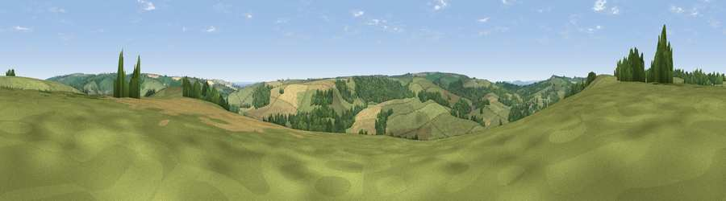

Viewpoint near Toller Fratrum
#31689 in England · top 74% of its area beats it · near Toller FratrumWhere it is
The exact computed spot (SY 57425 98175). Click the marker for map links.
The view, rendered

A 360° render of this exact spot computed from the terrain model, tree cover and land cover — summer colours, afternoon light, calibrated against photographs of famous viewpoints. Real trees, hedges and buildings will differ in detail.
The panorama
Grey silhouette: terrain skyline in each direction (720 bearings, Earth curvature and refraction included). Dashed green: skyline with trees (+15 m) and buildings (+8 m) as obstacles. Blue strip: how far the ground is visible on each bearing.
Where the view opens
Wedge length = distance to the farthest visible ground on that bearing (vegetation-aware). Rings at 10, 25 and 50 km.
What fills the view
63% grassland · 19% woodland · 18% cropland ·
Angular shares of the visible panorama (visual magnitude), not map area. Landscape diversity 0.41 (0–1 Shannon).
Key numbers
More beautiful places nearby
The staircase of upgrades: each row has a higher view potential than everything closer. Driving times are estimates from straight-line distance, calibrated against real road routing — check an actual route before setting out.
| Place | Direction | Drive | Score |
|---|---|---|---|
| Viewpoint near Wynford Eagle | SSE · 3 km | ~7 min | 39.3 |
| Viewpoint near Toller Porcorum | SW · 4 km | ~8 min | 57.7 |
| Viewpoint near North Poorton | W · 4 km | ~10 min | 75.4 |
| Viewpoint near Nettlecombe | SW · 5 km | ~11 min | 79.3 |
| Eggardon Hill | SSW · 5 km | ~11 min | 80.3 |
| Viewpoint near Askerswell | SW · 5 km | ~11 min | 81.7 |
| Viewpoint near Portesham | SSE · 11 km | ~21 min | 82.7 |
| The Knoll | SSW · 11 km | ~21 min | 91.0 |
50.78158, -2.60526 · source: screening · position refined by local search. Computed location — check access rights before visiting.